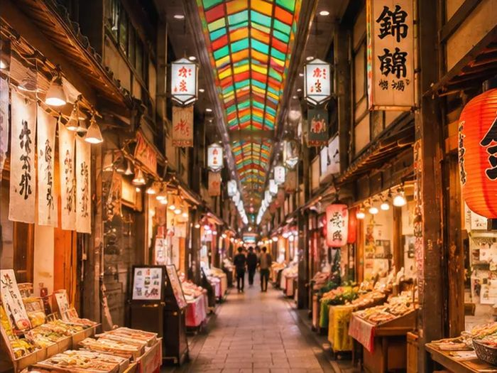

Kyoto Lab ／ From Shimogyo, Kyoto
Solving Kyoto’s challenges.
For Kyoto’s small companies and independent shops: meet your new sidekick, AI. Chatting with guests from abroad, answering enquiries and reviews, adding up the month’s sales — hand over the tedious bits, one at a time.
Born and raised in Shimogyo, we only build what fits the shops of this city.
Kyoto, Japan ／ AI adoption · Multilingual support · Field notes
Also on social
Why
Six years away,
learning Kyoto again.
Born in Shimogyo, Kyoto. Lived here until 24, left for work, came back at 30. Six years on, Kyoto felt like a slightly different city.
The neighbourhood bathhouse from childhood is now packed with visitors from abroad. English notices are up on the walls. Even so, you keep seeing people frozen in the changing room, not sure what comes next. What Japanese people picked up without ever being told just doesn’t fit on a sign.
And it isn’t only the visitors who are stuck. Shops now have enquiries, reviews and social media to answer, in languages they don’t speak. For a place run by a handful of people, that is work quietly piling up outside the actual job.
Enter AI. But what it should take on is different in every shop. So we start by watching the work, begin small where it helps most, and keep coming back to hear what didn’t work. AI and IT are the founder’s day job; Kyoto Lab points them at the shops and companies of home.
Vision
AI, the shop’s
new sidekick.
Picture Kyoto’s shops using AI the way they use the till or the phone: nothing special, just part of the day. Replies in other languages, enquiries, sales figures — let AI handle the work outside the job, and spend the time you get back on your customers and your craft. Visitors to Kyoto come out ahead, too.
Products and services
AI, in the
shop’s toolbox.
AI adoption for small companies and independent shops. We work out with each shop what AI should take on, then build it as a website, an app, an Instagram account or writing on note and Medium — and stick around until it feels like part of the shop.
Observe, build, bring it back.
The goal
AI adoption for small businesses and independent shops
What AI can do is different in every shop. So we look at the work as it happens today and start small where it will help most. The tools are just the means. The point is less hassle for the shop.
- 01ObserveLook at the work and find where AI helps
- 02BuildChoose the means that fit the shop and make it
- 03StayKeep advising after launch until it becomes routine
Use cases
So, what does
it look like?
Two examples to think it through. Both are made up, not real companies or shops, and where to start is decided together each time. One rule never changes: AI writes the draft, and a person checks it before any customer sees it.
Example A
A small business
A company of about ten people, always chasing enquiries, quotes and the month-end numbers.
- Replies to the contact formAI sorts incoming enquiries by topic and drafts a reply. The person in charge checks it and sends it.
- Sales and invoice reportsSales and invoice data is turned into the same tables and charts every month, with no copying by hand.
- Drafts of quotes and emailsAI drafts them from past quotes and standard wording.
- Meeting notes and daily reportsMinutes are written from recordings or notes, with a list of decisions and who owns each one.
- An internal help deskAI reads the company's manuals and rules, and answers staff questions by pointing to the right section.
- Overseas clients and customersEmails in other languages are translated, and replies are drafted.
- WebsiteA company site in Japanese and English, with news updates made easier by AI.
- AI training for staffPractice with the company's own work, so staff can use it the next day.
Example B
An independent restaurant
Run by the owner and family. More guests from abroad every month, and not enough hands for service, social media and reviews.
- Serving overseas guests in their languageA multilingual menu shows each dish, allergens and ingredients such as fish stock in the guest's own language.
- Replies to Google reviewsAI drafts a reply to each new review in the reviewer's language. The owner checks it and posts it.
- Replies to bookings and questionsDrafts for the questions that keep coming: opening hours, bookings, vegetarian options.
- Website and Google MapsA one-page site in Japanese and other languages, and a tidy Google Maps listing.
- Instagram postsFrom a photo and a line of text, AI writes the post in English and Japanese.
- Sales reportsTill data is summarised each week by day, time and dish, to plan prep and staffing.
AI adoption demo
See what gets
lighter.
What does AI actually take off a shop’s plate? Easier to show than to explain. Using a made-up diner, the Kyoto Lab Demo Shokudo, the demo lines up a four-language menu, replies to reviews written in other languages, social posts and the house rules, one phone screen each. AI writes the draft; the shop just checks it.
Try the demo (in Japanese) ›Sample restaurant
SCAN AT THE TABLE
Spot guide
The hour changes
the place.
Kyoto’s famous places all fill up at the same hours. But the place is not what is uneven — the hour is. The same spot at 7am and at 1pm are two different places. What is worth telling you is not just where to go, but when, and what to look at.
Bamboo Grove
ARASHIYAMA Read the guide ›Kiyomizu-dera
KIYOMIZU-DERA Read the guide ›Fushimi Inari
FUSHIMI INARI Read the guide ›Togetsukyo
ARASHIYAMA Read the guide ›Kinkaku-ji
KINKAKU-JI Read the guide ›Ginkaku-ji
GINKAKU-JI Read the guide ›Gion
GION Read the guide ›
Nishiki Market
NISHIKI MARKET Read the guide ›Nijo Castle
NIJO-JO CASTLE Read the guide ›Imperial Palace
KYOTO GOSHO Read the guide ›Sanjusangen-do
SANJUSANGEN-DO Read the guide ›Nanzen-ji
NANZEN-JI Read the guide ›Tofuku-ji
TOFUKU-JI Read the guide ›Philosopher’s Path
TETSUGAKU-NO-MICHI Read the guide ›Sannenzaka & Ninenzaka
SANNENZAKA Read the guide ›Heian Jingu
HEIAN JINGU Read the guide ›Shimogamo Shrine
SHIMOGAMO-JINJA Read the guide ›Images are original illustrations, not photographs. Opening hours and rules change — please also check each place’s official information before you go.
Field notes
Free to readIn Kyoto, a Good Sauna Costs ¥550
Skip the hotel spa. Three neighbourhood bathhouses with a proper sauna: two cold plunges in Shimabara, a sauna inside a sauna, and an old favourite on the Takase river. Plus everything a first-timer needs to know.
Translation Won’t Fix It
Two scenes from Kyoto’s small shops where travellers got stuck, and why a translation app would not have helped either time. Three fixes, ranked by whether one person can keep them running.
Living in Shimogyo
The ward I was born in. A grid you cannot get lost in, lunch one street off Shijo, a river you can run along — and the practical reason to book your hotel here rather than somewhere famously beautiful.
Also in Japanese — a series on the water that runs through Kyoto (the Kamo river, Heian Shrine, the aqueduct through Nanzen-ji). Read them on the Japanese site ›
About
- Name
- Kyoto Lab（京都ラボ）Preparing to register as a sole proprietorship. Incorporation will follow the business, not precede it
- Founder
- Daichi NinomiyaBorn in Shimogyo, Kyoto. Works in AI and software; returned to Kyoto after six years away
- Based in
- Kyoto, JapanFull address will be published once trading begins
- Status
- Preparing to open
- What we do
- AI adoption for small businesses and independent shopsThrough websites, apps and services, Instagram, and writing on note and Medium. We also run a local media site about Kyoto
- Contact
- +81 80-6935-2240Japanese only by phone. Please use the form below for English
Get in touch
Tell us what
is not working.
Whether you are visiting and something was impossible to figure out, or you run a shop here and the same conversation keeps going wrong — we would like to hear the specific case. That is how the list of things to build gets written.